Projects
Electrical & Instrumentation Projects
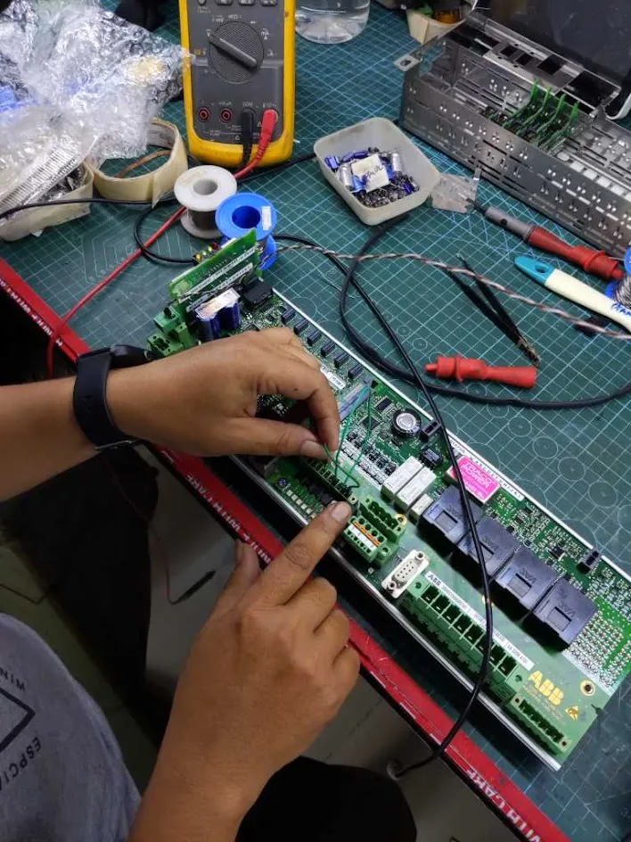
Assessment and Repair of Various Automation Cards
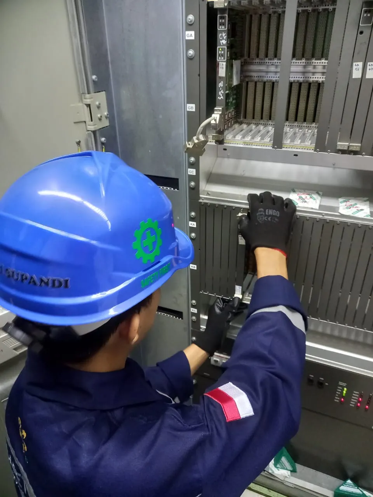
Assessment and Repair of Distributed Control System (DCS)

Revitalization of Medium Voltage Panel
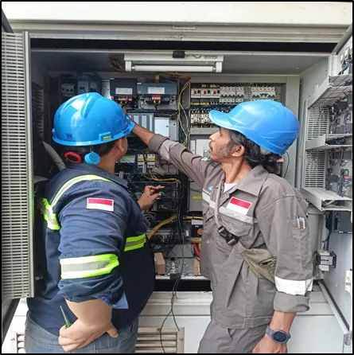
Retrofit PLC Diverter Damper
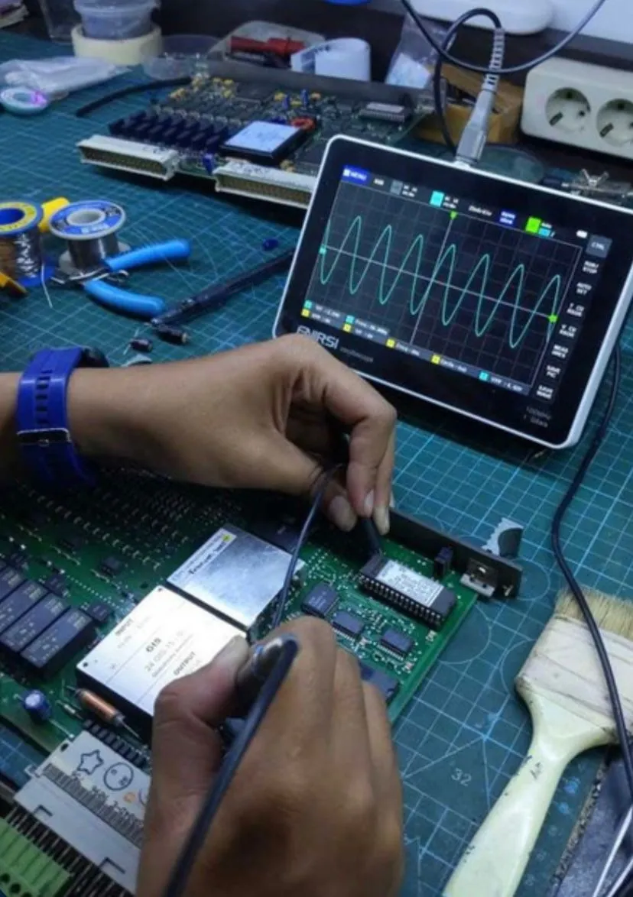
Assessment and Repair of Automation Cards
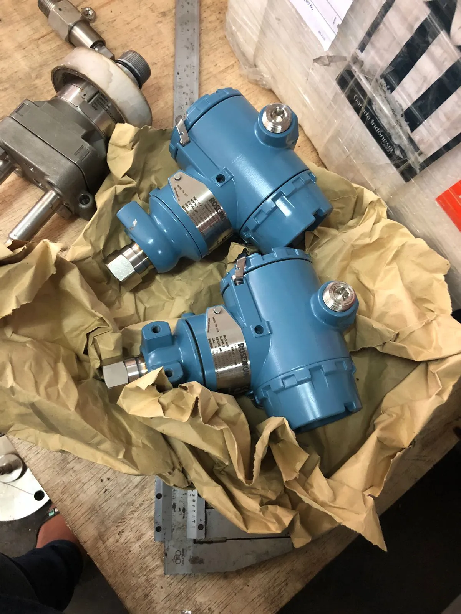
Procurement of Automation and Industrial Equipment

Assessment and Repair of Motor Operated Valves (MOV)

Retrofit Control System for Cathodic Protection
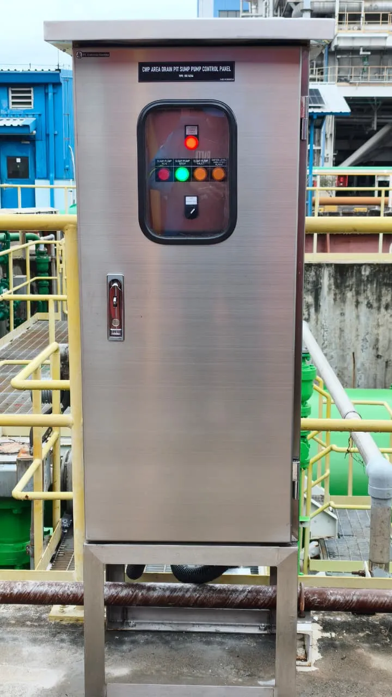
Retrofit of Sump Pump Control Panel
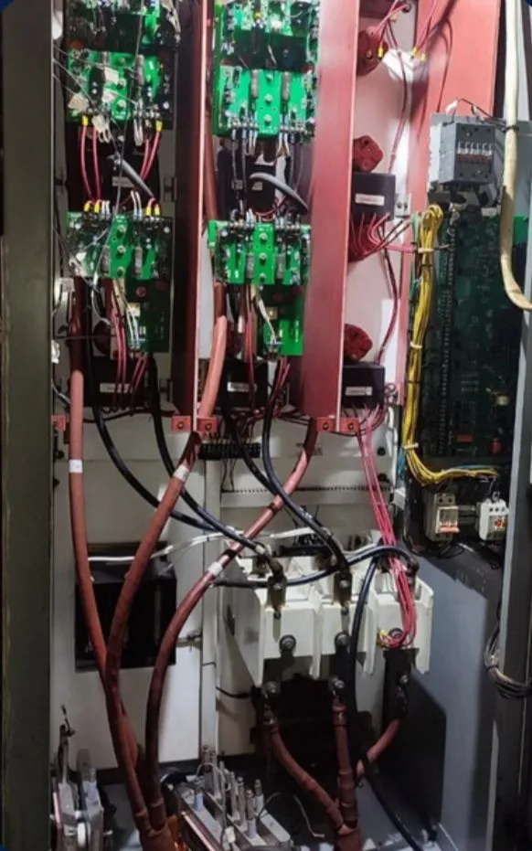
Assessment and Repair Motortronics Soft Starter for 6kV Motor
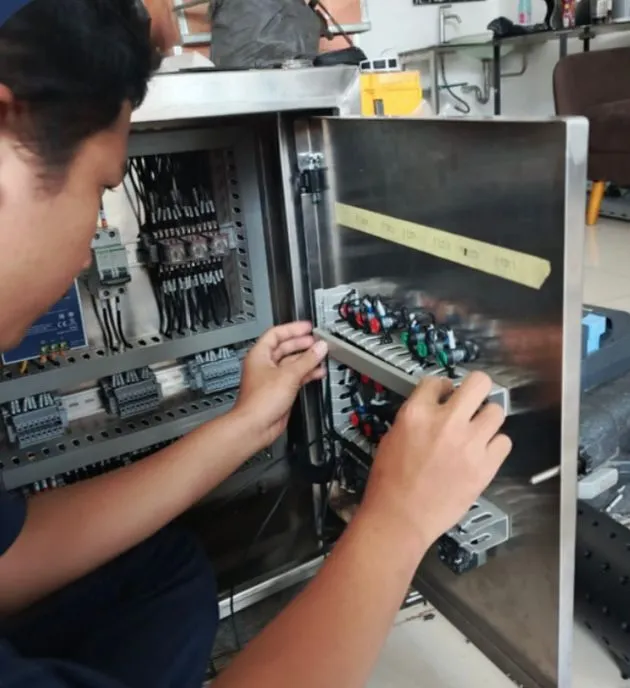
Modification Control System of Maneuver Damper
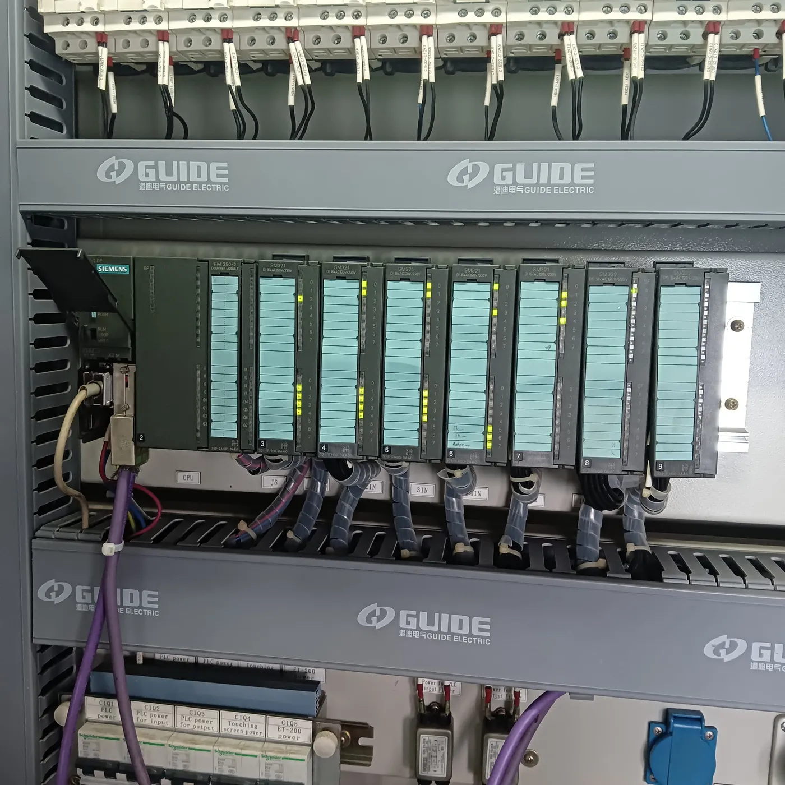
Upgrade of Excitation Breaker System

Upgrade System Control and VSD Grabber Ship Unloader

Industrial Compressor Maintenance

Routine Maintenance Services for Industrial Rolling Doors

Revitalization and Repair of Overhead Cranes

Installation of Precision Air Handling Unit
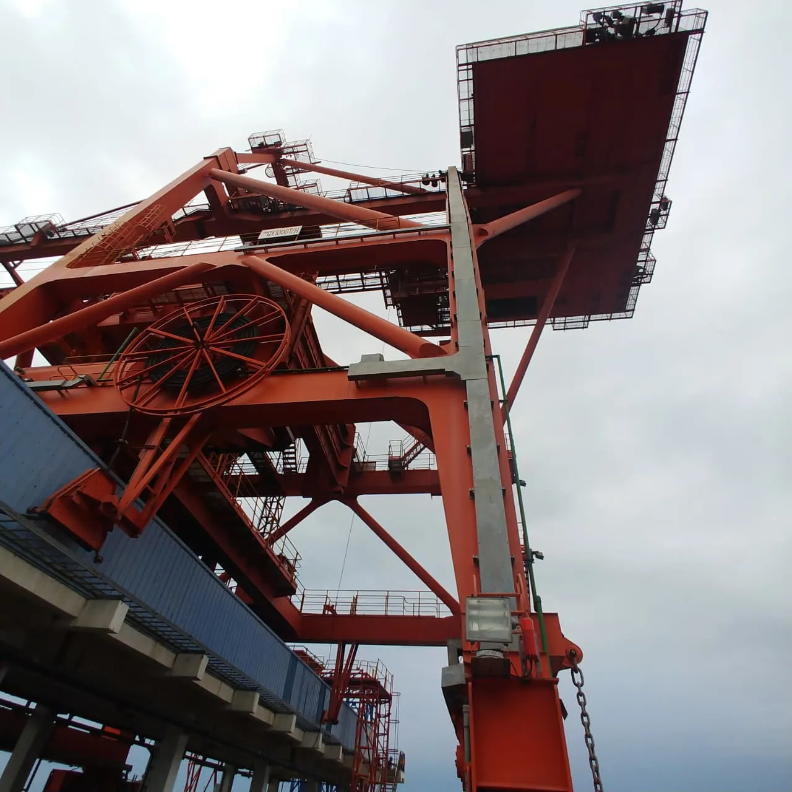
Assessment and Repair of Infrared Curtains
Medium Voltage Cable Replacement
#20Electrical & Instrumentation
Ship Unloader Assessment and VSD Repair

Upgrade of Air Handling Unit System
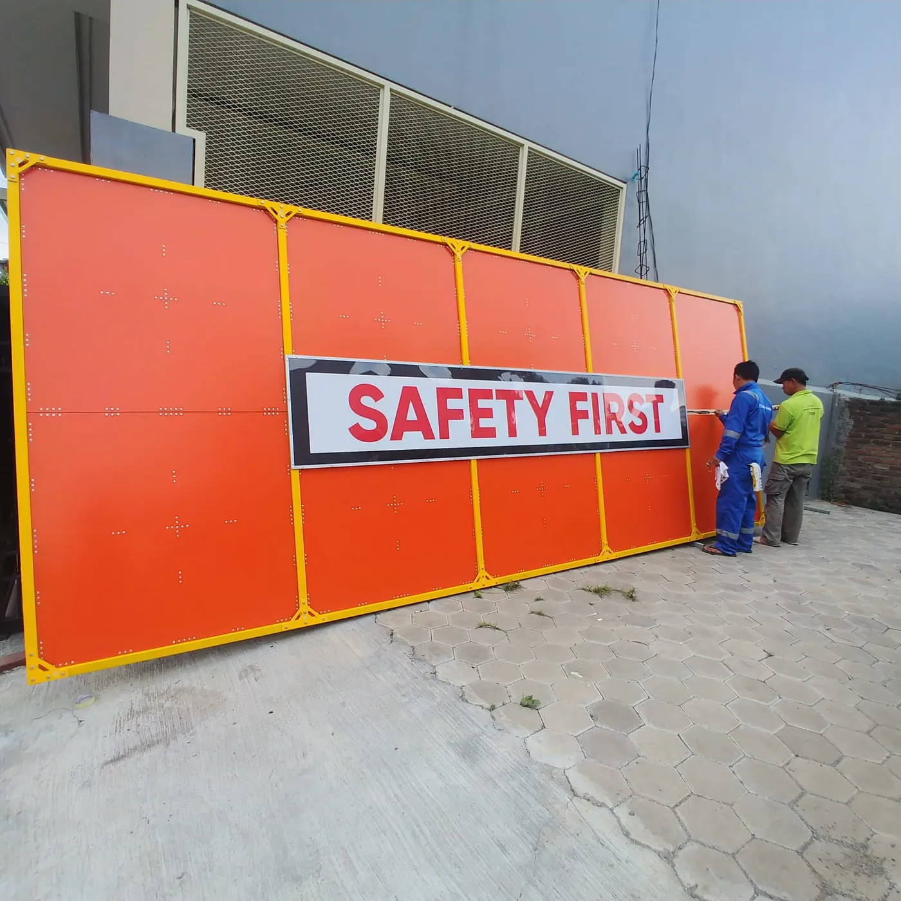
Upgrade Control Room for Overhead Cranes

Upgrade of Construction Lifting Tools
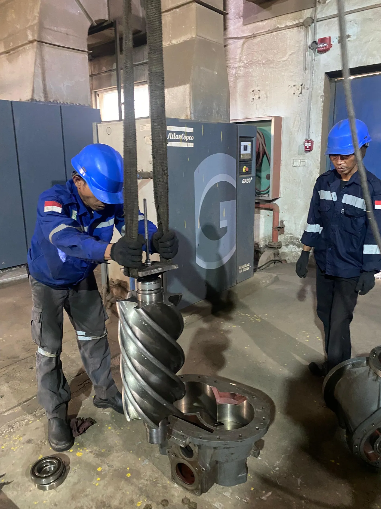
Major Overhaul of Industrial Compressors

Administration Building Facade Design Services
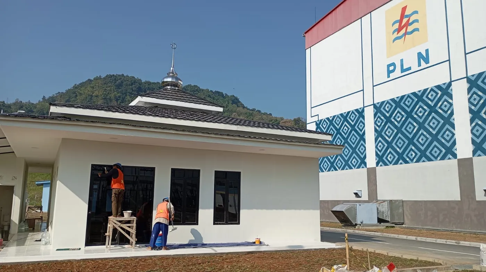
Mosque Construction and Revitalization
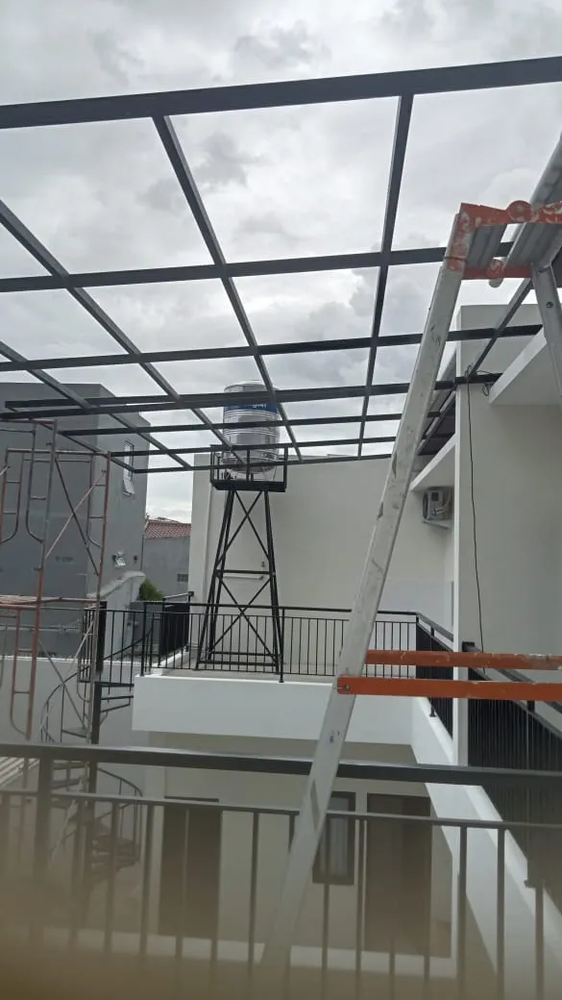
Canopy Installation & Landscaping Services